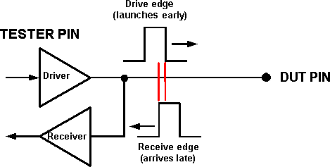
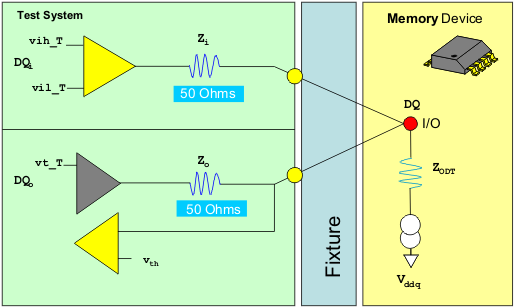

Dual transmission lines
A dual transmission line configuration is a method of using separate tester pins for drive and receive actions. Ordinarily the same tester pin is used for both purposes (that is, it sends out a drive edge to a DUT pin, and waits for an edge to be received from that DUT pin). For operation at very high speeds, this arrangement can become impractical, because transmission delays can result in "collisions" between outgoing and incoming signals.
Effects of transmission delay
There is always a transmission delay (typically in the range of 3 to 5 ns) between the test head electronics and the DUT pin. The delay is affected by the DUT board layout (that is, longer traces create longer delays). To nullify this transmission delay, we modify the timing of edges (advancing or retarding them just enough for the purpose). These timing modifications are handled by the Fixture Delay Tool, which measures the actual delay prior to test execution, and adds compensating offsets to your timing setup. (In other words, you can set up timing with reference to the DUT pins, and ignore the effects of of load board delay because the Fixture Delay Tool will correct for it during measurement.)
For example, if the delay is 3 ns, the tester will actually launch an outgoing pulse 3 ns early (to ensure that it arrives at the DUT pin on time). Similarly, we make a compare operation 3 ns late (to ensure that we look for a pulse only when it has had enough time to reach the receiver).
Collisions
At high data rates, with very short write cycles and read cycles (less than 3 ns in some cases), the transmission delay can become large relative to the cycle time. If a read cycle (in which the DUT output reaches the comparator late) is followed immediately by a write cycle (in which the pin driver sends out a pulse early), the incoming signal can "collide" with the outgoing one. That is, by the time the incoming pulse reaches the receiver, the driver - which should be providing the proper termination voltage to the output pin - is instead sending out a drive edge (a logic 0 or 1).
If the receiver pin sees the DUT output summed with a drive edge (and not with the proper termination voltage needed to bias the DUT pin), the receiver will not be able to read the DUT output reliably.

To avoid this type of collision, it is possible to set up a dual transmission line configuration known as a "flyby connection", in which two pins on the test head connect to one pin on the DUT. Because separate pins are used to launch signals toward the DUT pin and to receive signals from the DUT pin, and because the connection between the two is distant from the tester pins, the operations of the driver and receiver do not interfere with one another.

The collision protection provided by the flyby connection comes at a cost of dedicating two tester channels to each I/O pin on the DUT.